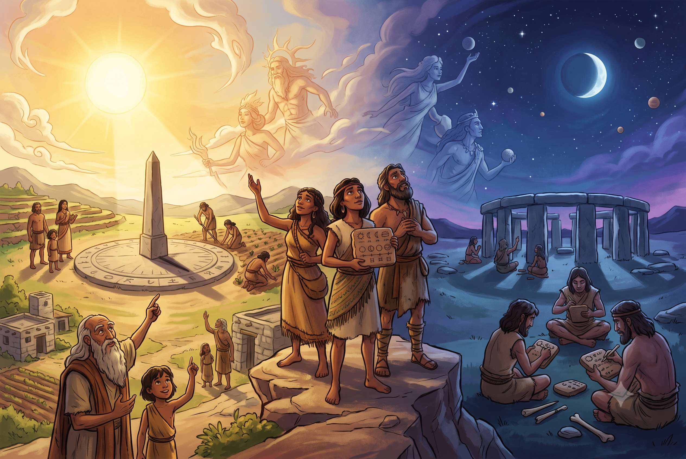
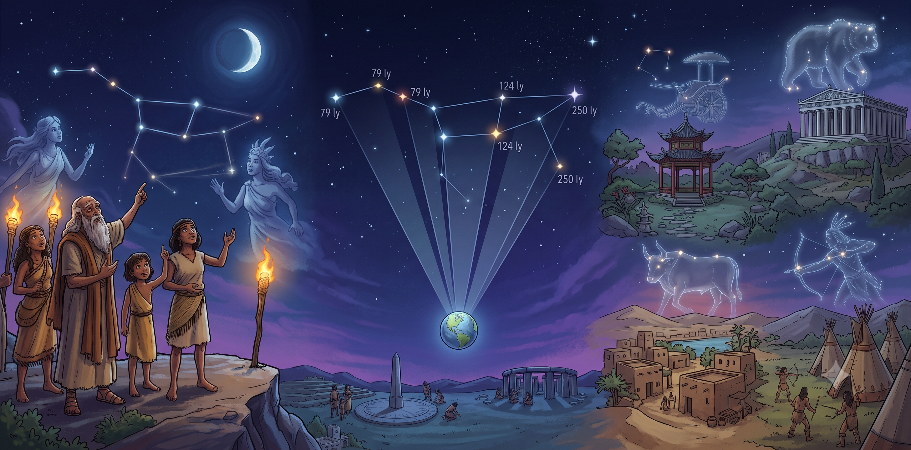
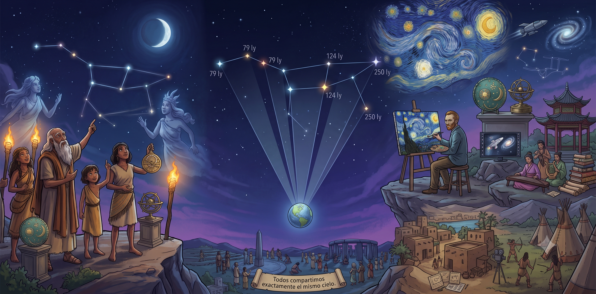
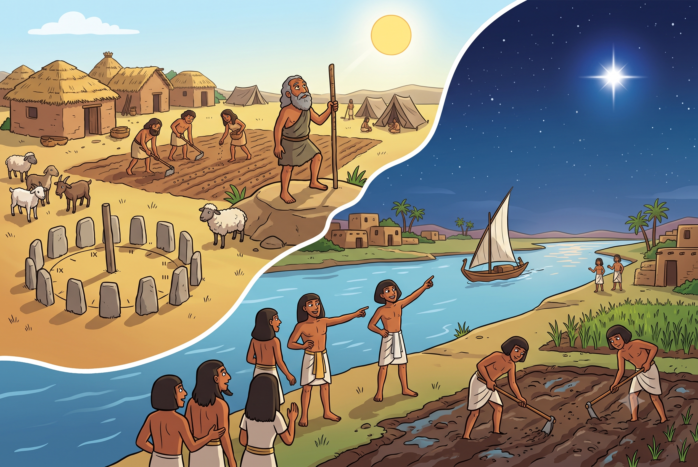
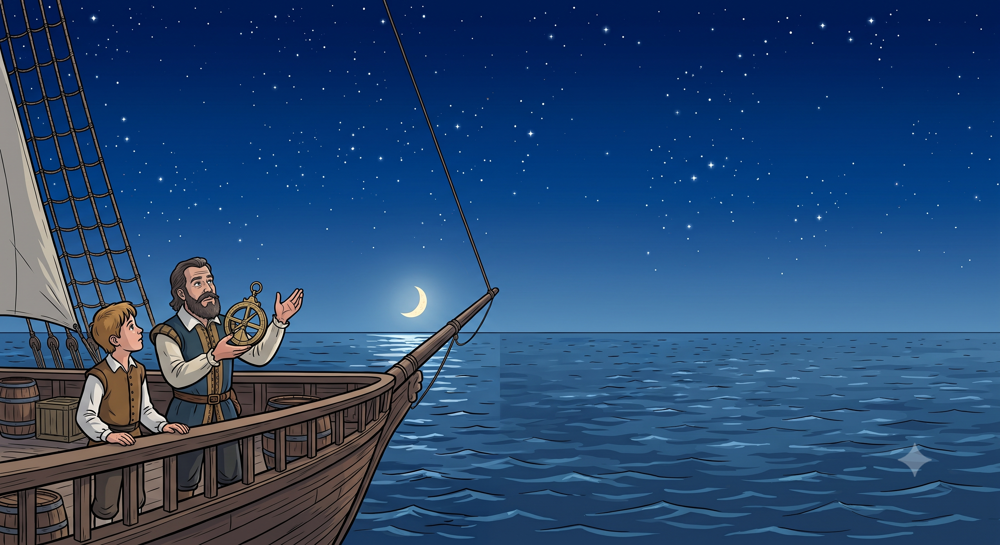

Serie: Grandes ideas de la Astronomía
Los orígenes de la observación del cielo
¡Te damos la bienvenida a este viaje espacial! Descubre cómo la humanidad comenzó a observar el cielo y por qué el movimiento de los astros transformó nuestra forma de vivir para siempre.
1. El cielo: el primer misterio de la humanidad

La Astronomía es una de las ciencias más antiguas del mundo. Se dedica a estudiar los objetos del espacio, cómo se mueven y qué sucede más allá de la Tierra.
Mucho antes de inventar los telescopios, nuestros antepasados ya observaban el cielo a simple vista. Comprender los ciclos del Sol, de la Luna y de los planetas fue el primer gran esfuerzo humano por encontrar un orden en la naturaleza.
Al principio, muchas culturas antiguas creían que los astros eran dioses o seres mágicos. Sin embargo, pronto descubrieron que mirar el cielo tenía una gran utilidad práctica: funcionaba como un enorme y exacto reloj que les servía para medir el tiempo y organizar la vida de sus comunidades.
💡 ¿Sabías que...?
Las primeras personas no escribían sus descubrimientos en libros. Los científicos han encontrado registros astronómicos tallados en huesos de animales o pintados en las paredes de cuevas prehistóricas, con miles de años de antigüedad.
2. Las Constelaciones: dibujos con estrellas

Al mirar el cielo en una noche despejada, nuestro cerebro tiende a buscar formas uniendo los puntos luminosos. A estos dibujos imaginarios de estrellas los llamamos constelaciones.
Es importante saber que las estrellas de una constelación no están realmente cerca unas de otras en el espacio; algunas están muchísimo más lejos que otras. Solo parecen formar un dibujo porque las vemos juntas desde nuestra posición en la Tierra.
A lo largo de la historia, distintas culturas imaginaron figuras diferentes en el mismo cielo. ¡Toca las tarjetas para descubrirlo!
Antiguos Griegos
Toca para girar
Unían las estrellas para dibujar a los héroes y monstruos de sus mitos, como el gran cazador Orión o el enorme Escorpión.
Culturas Nativas
Toca para girar
Pueblos como los mayas veían en el cielo a animales muy importantes para su entorno, como jaguares, serpientes y aves sagradas.
Pueblos del Sur
Toca para girar
En Sudamérica y Australia, muchos pueblos no unían estrellas brillantes, sino que miraban las manchas oscuras del cielo para formar animales como la llama cósmica.
En el año 1922, los astrónomos de todo el mundo se pusieron de acuerdo y dividieron el cielo en 88 regiones oficiales. Así, las constelaciones dejaron de ser solo cuentos antiguos y pasaron a ser un mapa exacto para que los científicos ubiquen galaxias y planetas de forma rápida.
3. El cielo en el arte y la cultura

El cielo nocturno, inmenso y silencioso, siempre ha despertado asombro y curiosidad. Esta emoción inspiró a personas de todas las épocas, convirtiendo al espacio en un tema central para el arte humano.
- 🎨 En la pintura: Desde objetos de bronce antiguos hasta el famoso cuadro "La noche estrellada" del pintor Vincent van Gogh, el arte ha intentado atrapar la belleza de las estrellas.
- 🎬 En las historias: Una gran cantidad de libros, canciones y películas tratan sobre viajes espaciales y galaxias lejanas.
El arte nos ayuda a conectar con el universo de una forma emocionante. Además, nos recuerda algo muy importante: no importa de qué país seamos, todos compartimos exactamente el mismo cielo.
4. Los calendarios y la agricultura

Cuando los seres humanos dejaron de ser nómadas y empezaron a plantar sus propios alimentos, observar el cielo se volvió vital. Para tener buenas cosechas, necesitaban predecir cuándo llegarían las lluvias o el frío. Por eso, guiándose por el movimiento del Sol, crearon los primeros calendarios.
🌊 El aviso del río Nilo
En el antiguo Egipto, los agricultores vigilaban muy de cerca a Sirio, la estrella más brillante de la noche. Sabían que justo cuando Sirio aparecía en el cielo un poco antes del amanecer, el gran río Nilo estaba a punto de inundarse. Esa inundación era necesaria porque dejaba la tierra mojada y perfecta para sembrar la comida de todo el año.
5. Navegando con ayuda de las estrellas

Mucho antes de que se inventara el GPS o las brújulas modernas, viajar en barco por el océano era muy peligroso. Sin montañas ni costas a la vista, los marineros podían perderse fácilmente. Su única guía segura estaba arriba: el cielo.
A esta técnica se la conoce como navegación astronómica. Durante la noche, utilizaban estrellas específicas como si fueran faros:
- 🧭 En el norte: Los marineros buscaban la Estrella Polar, ya que siempre se mantiene quieta señalando exactamente hacia el norte.
- 🧭 En el sur: Como no tenían una estrella polar, se guiaban buscando la famosa constelación de la Cruz del Sur.
Esta forma de guiarse mirando los astros es tan confiable que, incluso hoy en día, se les enseña a los marineros profesionales por si las computadoras de sus grandes barcos llegan a fallar.
🚀 Para saber más
Si quieres seguir aprendiendo sobre el espacio de forma divertida, te recomendamos estos sitios educativos:
- Nasa Space Place (en español): Sitio de la NASA con artículos fáciles de entender y juegos.
- ESA Kids: Página de la Agencia Espacial Europea con noticias y curiosidades sobre el universo.
- Portal UruguayEduca - Astronomía: Materiales educativos sobre el cielo que vemos todos los días.
📺 Video Recomendado
Te invitamos a ver este video del canal del usuario "Juankstar". Te explicará cómo la Humanidad fue inventando los nombres de estos grupos de estrellas. ¡Dale play!
🕹️ Explora el cielo desde tu computadora
Para ver cómo lucen las constelaciones desde tu lugar y en cualquier momento, te sugerimos usar la página Stellarium Web. Es un planetario gratuito online en tu dispositivo donde puedes buscar tu ciudad y ver qué estrellas la iluminan esta misma noche.
Material de referencia
Este contenido está basado en la propuesta del documento "Big ideas in Astronomy" de la Unión Astronómica Internacional
⭐ Desafío Final
Es momento de poner a prueba lo que hemos aprendido en estas páginas.
Cargando pregunta...